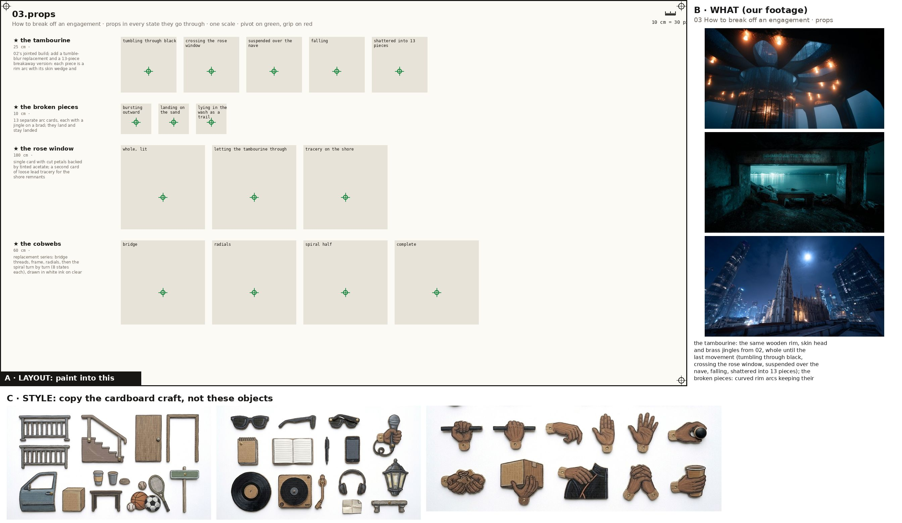
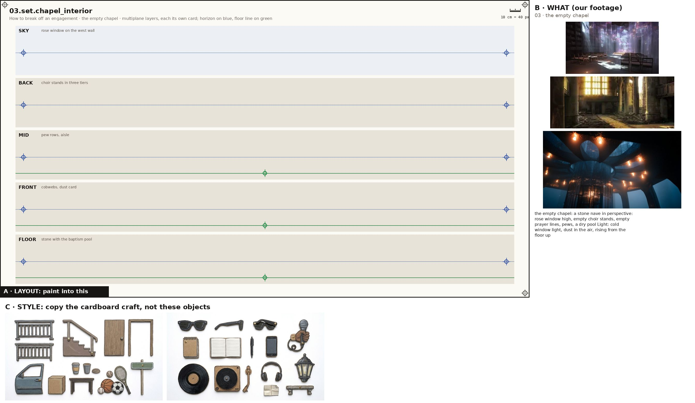
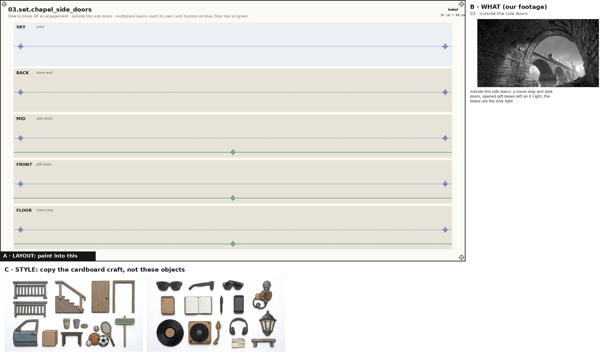
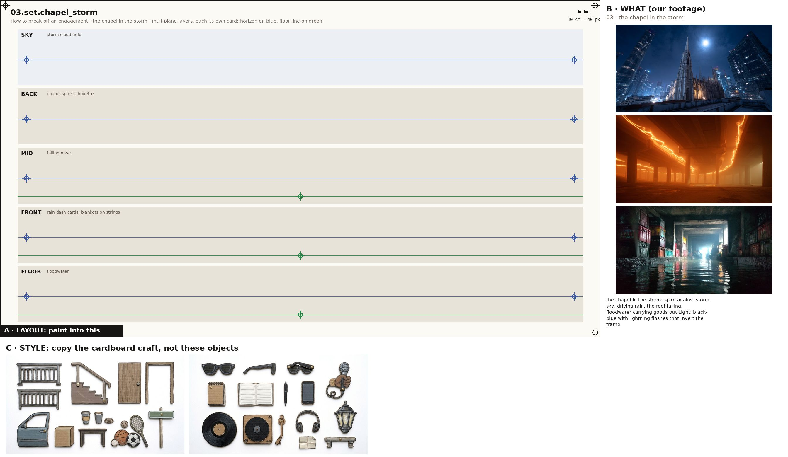
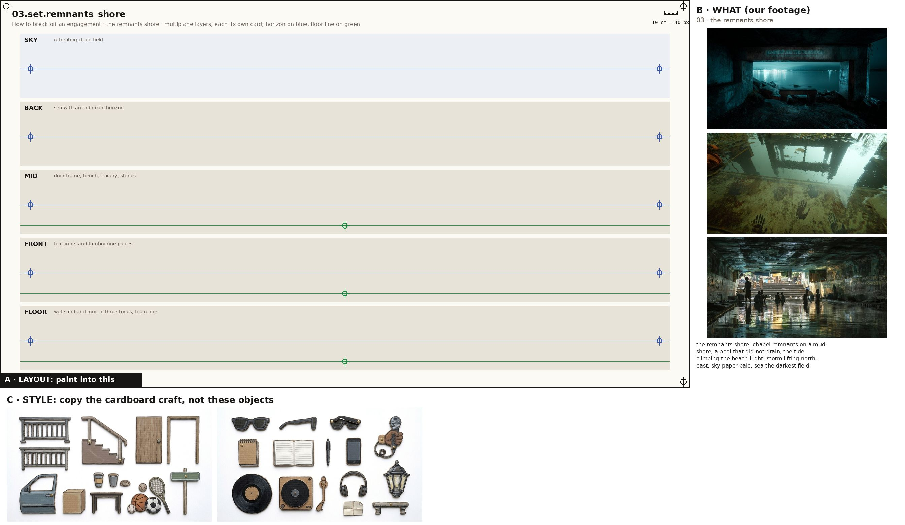
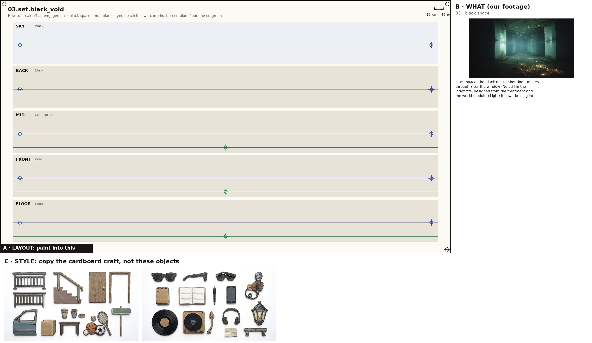
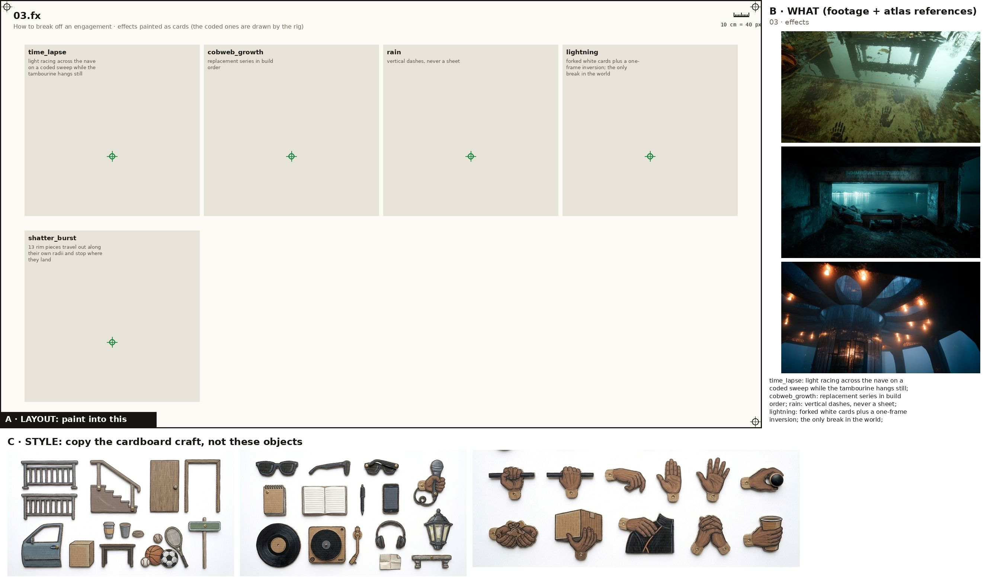

One image + one prompt each. The characters' action sheets are in the cast above; their costume kits are on the character kits page.

Props, every state props
Paint one sheet of cut-out puppet parts for a paper-puppet film, using the attached image. Panel A is the exact layout, panel B is our footage for these props (reference: copy the object, not the photo style), panel C is the style. STYLE (panel C): flat cards cut from corrugated cardboard, gouache with confident ink linework, the flutes faintly showing through the paint, a thin raw kraft-brown cut edge round every card, brass split-pin brads; shot flat-on, even light, no shadows, no perspective. Copy the craft from C, not the clothes in it. WHAT (panel B): the props of the poem 'How to break off an engagement', one row each, every state of a prop in its own cell, left to right: the tambourine: the same wooden rim, skin head and brass jingles from 02, whole until the last movement (tumbling through black, crossing the rose window, suspended over the nave, falling, shattered into 13 pieces); the broken pieces: curved rim arcs keeping their curvature, torn skin, loose brass jingles, lying in the wash (bursting outward, landing on the sand, lying in the wash as a trail); the rose window: a round window of twelve petals off a central ring, leaded (whole, lit, letting the tambourine through, tracery on the shore); the cobwebs: three webs hung off the architecture, wandering spirals (No still in the index fits; designed from the treatment and the world module.) (bridge, radials, spiral half, complete); the opened gift boxes: white wedding gift boxes, lids off, a faint light still rising out of them (No still in the index fits; designed from the treatment and the world module.) (opened, glowing, split by lightning); two sets of footprints: mud prints, sole plus toe pad, two trails out of step, converging with distance (arriving one at a time, two trails leading away); the pews: oak pews in perspective, in three decay states (intact, cobwebbed, gone); the baptism pool: a sunken tiled pool, dry and cracked (dry, cracked, leaves in the drain); strings with nobody on them: black marionette strings from a ceiling with no puppeteer, working soiled blankets (No still in the index fits; designed from the treatment and the world module.) (swaying in the storm); daily breads: round loaves swelling and rotting in the rain (No still in the index fits; designed from the treatment and the world module.) (fresh, soaked, rotted). Paint each state as a flat cardboard prop card at the size its cell gives, the same object across its row; a brass brad on the green cross (its pivot); where there is a red cross, that is where a hand grips it. LAYOUT (panel A): paint one card inside each grey ghost, in the same place, size and angle, inside its dashed outline; a brass brad exactly on every green cross; each red cross must fall inside that card's rounded end. NEVER draw a pelvis, hip, shorts or briefs card (the thighs end in a rounded seat that tucks under the hem), a sleeveless vest, lace-up boots, or sunglasses painted onto a head. OUTPUT: only the painted cards on a pure white 2048x1152 sheet laid out as panel A. Leave out panels B and C, the crosses, labels, ruler, dashed lines and ghosts.

the empty chapel set
Paint one sheet of cut-out puppet parts for a paper-puppet film, using the attached image. Panel A is the exact layout, panel B is our footage for this place (reference: copy the place, not the photo style), panel C is the style. STYLE (panel C): flat cards cut from corrugated cardboard, gouache with confident ink linework, the flutes faintly showing through the paint, a thin raw kraft-brown cut edge round every card, brass split-pin brads; shot flat-on, even light, no shadows, no perspective. Copy the craft from C, not the clothes in it. WHAT (panel B): the empty chapel: a stone nave in perspective: rose window high, empty choir stands, empty prayer lines, pews, a dry pool Light: cold window light, dust in the air, rising from the floor up. SHEET: the place as five separate flat cardboard layers, one per band, painted to stack front to back in a multiplane rig: SKY: rose window on the west wall; BACK: choir stands in three tiers; MID: pew rows, aisle; FRONT: cobwebs, dust card; FLOOR: stone with the baptism pool. Each layer is its own card with a clean cut top edge and transparent gaps where the layer behind shows through; keep the horizon on the blue line and the floor on the green line in every band so they register. LAYOUT (panel A): paint one card inside each grey ghost, in the same place, size and angle, inside its dashed outline; a brass brad exactly on every green cross; each red cross must fall inside that card's rounded end. OUTPUT: only the painted cards on a pure white 2048x1152 sheet laid out as panel A. Leave out panels B and C, the crosses, labels, ruler, dashed lines and ghosts.

outside the side doors set
Paint one sheet of cut-out puppet parts for a paper-puppet film, using the attached image. Panel A is the exact layout, panel B is our footage for this place (reference: copy the place, not the photo style), panel C is the style. STYLE (panel C): flat cards cut from corrugated cardboard, gouache with confident ink linework, the flutes faintly showing through the paint, a thin raw kraft-brown cut edge round every card, brass split-pin brads; shot flat-on, even light, no shadows, no perspective. Copy the craft from C, not the clothes in it. WHAT (panel B): outside the side doors: a stone step and dark doors, opened gift boxes left on it Light: the boxes are the only light. SHEET: the place as five separate flat cardboard layers, one per band, painted to stack front to back in a multiplane rig: SKY: none; BACK: stone wall; MID: side doors; FRONT: gift boxes; FLOOR: stone step. Each layer is its own card with a clean cut top edge and transparent gaps where the layer behind shows through; keep the horizon on the blue line and the floor on the green line in every band so they register. LAYOUT (panel A): paint one card inside each grey ghost, in the same place, size and angle, inside its dashed outline; a brass brad exactly on every green cross; each red cross must fall inside that card's rounded end. OUTPUT: only the painted cards on a pure white 2048x1152 sheet laid out as panel A. Leave out panels B and C, the crosses, labels, ruler, dashed lines and ghosts.

the chapel in the storm set
Paint one sheet of cut-out puppet parts for a paper-puppet film, using the attached image. Panel A is the exact layout, panel B is our footage for this place (reference: copy the place, not the photo style), panel C is the style. STYLE (panel C): flat cards cut from corrugated cardboard, gouache with confident ink linework, the flutes faintly showing through the paint, a thin raw kraft-brown cut edge round every card, brass split-pin brads; shot flat-on, even light, no shadows, no perspective. Copy the craft from C, not the clothes in it. WHAT (panel B): the chapel in the storm: spire against storm sky, driving rain, the roof failing, floodwater carrying goods out Light: black-blue with lightning flashes that invert the frame. SHEET: the place as five separate flat cardboard layers, one per band, painted to stack front to back in a multiplane rig: SKY: storm cloud field; BACK: chapel spire silhouette; MID: failing nave; FRONT: rain dash cards, blankets on strings; FLOOR: floodwater. Each layer is its own card with a clean cut top edge and transparent gaps where the layer behind shows through; keep the horizon on the blue line and the floor on the green line in every band so they register. LAYOUT (panel A): paint one card inside each grey ghost, in the same place, size and angle, inside its dashed outline; a brass brad exactly on every green cross; each red cross must fall inside that card's rounded end. OUTPUT: only the painted cards on a pure white 2048x1152 sheet laid out as panel A. Leave out panels B and C, the crosses, labels, ruler, dashed lines and ghosts.

the remnants shore set
Paint one sheet of cut-out puppet parts for a paper-puppet film, using the attached image. Panel A is the exact layout, panel B is our footage for this place (reference: copy the place, not the photo style), panel C is the style. STYLE (panel C): flat cards cut from corrugated cardboard, gouache with confident ink linework, the flutes faintly showing through the paint, a thin raw kraft-brown cut edge round every card, brass split-pin brads; shot flat-on, even light, no shadows, no perspective. Copy the craft from C, not the clothes in it. WHAT (panel B): the remnants shore: chapel remnants on a mud shore, a pool that did not drain, the tide climbing the beach Light: storm lifting north-east; sky paper-pale, sea the darkest field. SHEET: the place as five separate flat cardboard layers, one per band, painted to stack front to back in a multiplane rig: SKY: retreating cloud field; BACK: sea with an unbroken horizon; MID: door frame, bench, tracery, stones; FRONT: footprints and tambourine pieces; FLOOR: wet sand and mud in three tones, foam line. Each layer is its own card with a clean cut top edge and transparent gaps where the layer behind shows through; keep the horizon on the blue line and the floor on the green line in every band so they register. LAYOUT (panel A): paint one card inside each grey ghost, in the same place, size and angle, inside its dashed outline; a brass brad exactly on every green cross; each red cross must fall inside that card's rounded end. OUTPUT: only the painted cards on a pure white 2048x1152 sheet laid out as panel A. Leave out panels B and C, the crosses, labels, ruler, dashed lines and ghosts.

black space set
Paint one sheet of cut-out puppet parts for a paper-puppet film, using the attached image. Panel A is the exact layout, panel B is our footage for this place (reference: copy the place, not the photo style), panel C is the style. STYLE (panel C): flat cards cut from corrugated cardboard, gouache with confident ink linework, the flutes faintly showing through the paint, a thin raw kraft-brown cut edge round every card, brass split-pin brads; shot flat-on, even light, no shadows, no perspective. Copy the craft from C, not the clothes in it. WHAT (panel B): black space: the black the tambourine tumbles through after the window (No still in the index fits; designed from the treatment and the world module.) Light: its own brass glints. SHEET: the place as five separate flat cardboard layers, one per band, painted to stack front to back in a multiplane rig: SKY: black; BACK: black; MID: tambourine; FRONT: none; FLOOR: none. Each layer is its own card with a clean cut top edge and transparent gaps where the layer behind shows through; keep the horizon on the blue line and the floor on the green line in every band so they register. LAYOUT (panel A): paint one card inside each grey ghost, in the same place, size and angle, inside its dashed outline; a brass brad exactly on every green cross; each red cross must fall inside that card's rounded end. OUTPUT: only the painted cards on a pure white 2048x1152 sheet laid out as panel A. Leave out panels B and C, the crosses, labels, ruler, dashed lines and ghosts.

Painted effects fx
Paint one sheet of cut-out puppet parts for a paper-puppet film, using the attached image. Panel A is the exact layout, panel B is our footage for the mood, panel C is the style. STYLE (panel C): flat cards cut from corrugated cardboard, gouache with confident ink linework, the flutes faintly showing through the paint, a thin raw kraft-brown cut edge round every card, brass split-pin brads; shot flat-on, even light, no shadows, no perspective. Copy the craft from C, not the clothes in it. WHAT: the poem's painted effects, one per cell, as flat cardboard cards that a cut-out film moves in front of the camera: time_lapse: light racing across the nave on a coded sweep while the tambourine hangs still; cobweb_growth: replacement series in build order; rain: vertical dashes, never a sheet; lightning: forked white cards plus a one-frame inversion; the only break in the world; shatter_burst: 13 rim pieces travel out along their own radii and stop where they land. A brass brad on the green cross of each. LAYOUT (panel A): paint one card inside each grey ghost, in the same place, size and angle, inside its dashed outline; a brass brad exactly on every green cross; each red cross must fall inside that card's rounded end. NEVER draw a pelvis, hip, shorts or briefs card (the thighs end in a rounded seat that tucks under the hem), a sleeveless vest, lace-up boots, or sunglasses painted onto a head. OUTPUT: only the painted cards on a pure white 2048x1152 sheet laid out as panel A. Leave out panels B and C, the crosses, labels, ruler, dashed lines and ghosts.